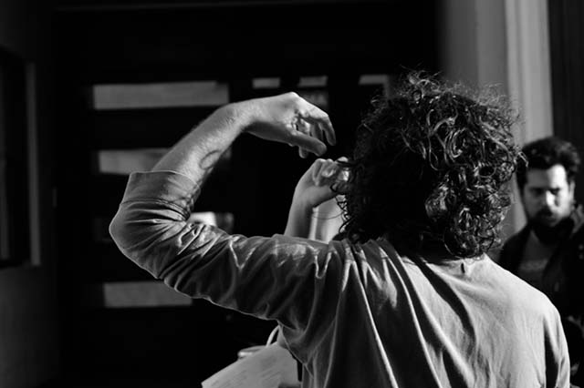
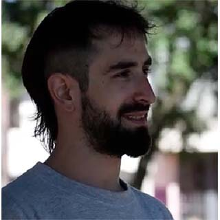
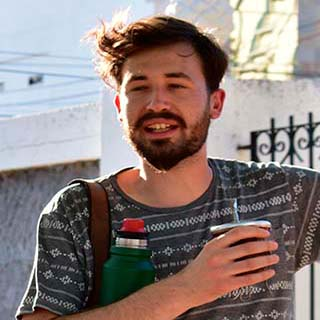

La SAL se conformó en los años 2000 como una agrupación estudiantil en la facultad de Ciencias Humanas, en un contexto universitario en donde predominaban las agrupaciones de grupos partidarios hegemónicos (PJ y UCR). En ese momento la agrupación hegemónica era la Franja Morada, que gobernaba la universidad a partir de la vuelta a la democracia. La SAL, surge específicamente en el año 2004, justo cuando se ponía en discusión qué modelo educativo/universitario. Allí surge este movimiento como alternativa.
Su nombre no se corresponde a una sigla en particular, sino que tiene que ver con un acontecimiento/anécdota que se instala como slogan: “A humanas le faltaba condimento, a humanas le faltaba sal”. Por ende, esta frase actúa como metáfora de que había otro tipo de propuesta posible dentro de la Facultad de Humanas. La SAL nace de la mano también de otras agrupaciones independientes, por ejemplo, el Movimiento Evita y entre ese conjunto de compañeros y carreras, se abre paso a esta agrupación en la facultad de Ciencias Humanas.
PROPUESTAS
- Becas para una mejor accesibilidad en el comedor universitario, fotocopiadoras y residencias. - Discusión de planes de estudio. - Debates en búsqueda de soluciones en cuanto a problemáticas sociales que atañen a los estudiantes. - Proyectos de prácticas socio comunitarias dentro del cursado. - Trabajos y organización de eventos para ayudar en barrios/comunidades precarizados/as de la ciudad.

Foto: Mayra Flores
Integrantes
Está conformada por estudiantes de la Facultad de Ciencias Humanas, independientemente de la carrera

Francisco del Corro
Estudiante de filosofía
Azul Ring
Estudiante de Ciencias Políticas

Mariano Llobell
Estudiante de Comunicación Social
HISTORIA DE LOS MOVIMIENTOS POLÍTICOS
Comienzos
El Frente Estudiantil Nacional fue uno de los movimientos estudiantiles de mayor alcance en la historia de nuestro país. Surgió durante la presidencia de Onganía, etapa conocida como “Onagianto”. Entre las medidas que llevó adelante, se destacan: la anulación de los contratos colectivos de trabajo, el congelamiento de los salarios, la reducción de personal, la represión y el cierre de los canales de representación, que dieron lugar al sindicalismo combativo liderado por la Confederación General del Trabajo (CGT) de los Argentinos. Por otra parte, fue intervenida la universidad mediante irrupción policial que desalojó a estudiantes y docentes, lo que se conoció como la Noche de los Bastones Largos, y prohibida la actividad política de los centros de estudiantes en todo el país, ya que el gobierno la consideraba como un “reducto comunista”.
El FEN fue una organización universitaria “de pasaje al peronismo”, que buscaba inserción “legítima” en el mismo, vinculándose a sectores del peronismo histórico y al trabajo barrial. Se trata de una época en la que la militancia en una determinada organización tenía fronteras bastante difusas y dinámicas, en el sentido de que había un continuo entrecruzamiento de las trayectorias de muchos de sus miembros, así como vínculos personales entre ellos, independientemente de la organización en la que participaran, así como idas y venidas, o incluso la participación simultánea en varias agrupaciones. A su vez, estas características de la militancia tienen que ver con experiencias generacionales, como la Revolución Cubana, la radicalización política y la movilización antidictatorial posterior al golpe de Estado de Onganía en 1966, el surgimiento de la CGT de los Argentinos, el Cordobazo, etc.; trayectorias políticas similares, como la militancia universitaria, para pasar posteriormente a la militancia en otros espacios, tanto sindical, así como también en el ámbito de la iglesia, o en barrios obreros y villas de emergencia, a partir de la vinculación con el peronismo.
Inicios de la democracia
Años antes del inicio formal de la transición democrática en diciembre de 1983 las juventudes argentinas comenzaron a movilizarse en diversos espacios, producto de un malestar creciente con el gobierno dictatorial y del despliegue de formas de participación locales, capilares, tanto en el lugar de trabajo como en el barrio. Los principales espacios juveniles vinculados con la transición a la democracia y la construcción de la misma que se constituyeron en horizonte de las prácticas participativas de los jóvenes en los primeros ochentas. Estas se expresan en las diferentes modalidades: el político partidario, el movimiento estudiantil universitario y secundario, el movimiento de derechos humanos y los ámbitos barriales.
Movimientos políticos estudiantiles de los 90’ y 00´
Los estudios sobre participación política juvenil en la argentina durante los años noventa, plantean una doble caracterización. Por un lado, los trabajos realizados en ese período señalaron la apatía frente a la política partidaria (Margulis, 1994; Deutsche Bank, 1993,1999; Sidicaro y Tenti Fanfani, 1998), así como el impacto de las transformaciones sociales en los vínculos que los jóvenes establecen con la participación (Balardini, 2000; Urresti, 2000). Por el otro, relecturas posteriores de la experiencia juvenil en los noventa, muestran también que la participación política juvenil transcurrió en espacios considerados alternativos frente a la política partidaria y con distintos niveles de politicidad, promoviendo prácticas fundadas en las nociones de autonomía, horizontalidad y territorialidad.
En el ámbito de la universidad pública, los primeros años 2000 se caracterizaron por un fuerte protagonismo de las agrupaciones definidas como independientes en la renovación de la vida política universitaria, así como en un conjunto de cambios que lentamente irían produciendo transformaciones en las prácticas, lenguajes y agendas del activismo estudiantil, dando lugar ya para el 2015, a articulaciones políticas de mayor escala, como corrientes nacionales o partidos, así como a una transformación de los significados del término “independiente”.